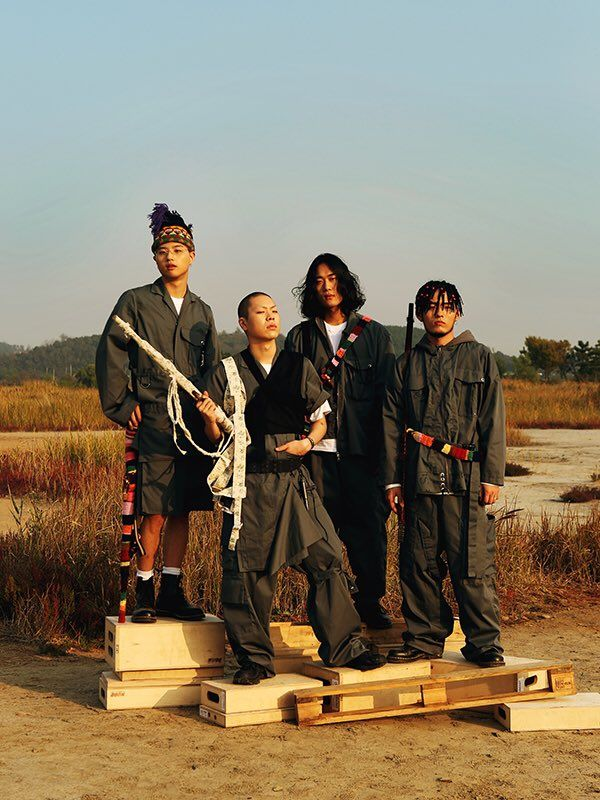

"혁오: 젊은 우리, 혁오라는 장르"
2014년 데뷔한 밴드 혁오는 작사와 작곡, 노래를 하는 오혁과 기타를 연주하는 임현제, 드럼을 치는 이인우와 베이스를 연주하는 임동건으로 구성되어 있다. 이들은 데뷔 EP [20]를 비롯, [22], [23], [24: How to nd true love and happiness] 등 음악 작업 당시의 나이를 제목으로 한 앨범에서 청춘의 다양한 감정과 상념을 노래해 왔다. 장르를 아우르는 넓은 스펙트럼의 음악과 감각적인 연주, 오혁 특유의 매력적인 음색에 섬세한 가사가 더해진 혁오의 음악은 동세대는 물론 같은 시기를 거친 폭넓은 세대의 공감과 사랑을 받고 있다. 또한 혁오는 음악 뿐 아니라 영상과 퍼포먼스, 패션 등 다양한 분야에서 독보적인 스타일로 유스컬처의 아이콘으로 자리매김했다. 2019년 혁오는 북미와 아시아, 유럽에서 41회의 투어 콘서트로 세계 곳곳의 팬들을 만났으며, 미국 최대 음악 축제인 ‘코첼라 밸리 뮤직 앤 아츠 페스티벌’을 비롯해 일본 ‘후지 록 페스티벌’, 네덜란드 ‘로우랜즈 페스티벌’, 벨기에 ‘푸켈팝 페스티벌’, 노르웨이 ‘오야 페스티벌’ 등 11개의 페스티벌에 초청받아 공연했다. 2020년 새 앨범 [사랑으로 through love] 출시와 함께 서울을 시작으로 아시아, 북미, 유럽에서 44회의 콘서트를 앞두고 있는 혁오는 세계 곳곳의 팬들과 가까이 만나며 교감의 폭을 넓힐 예정이다.